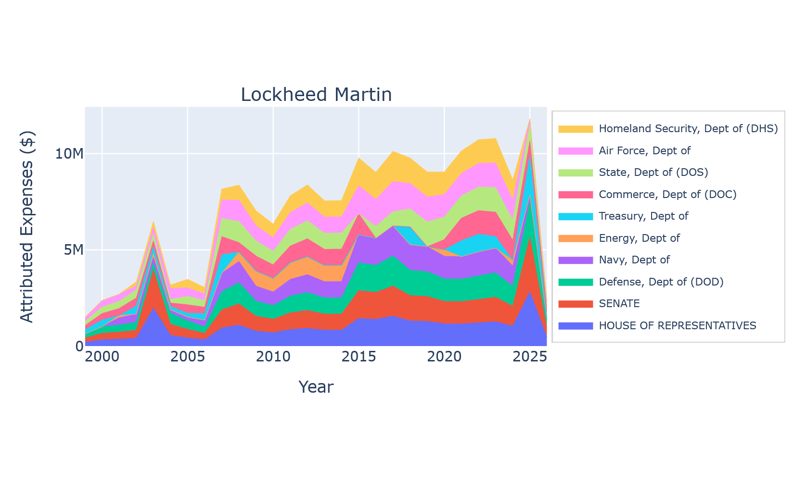
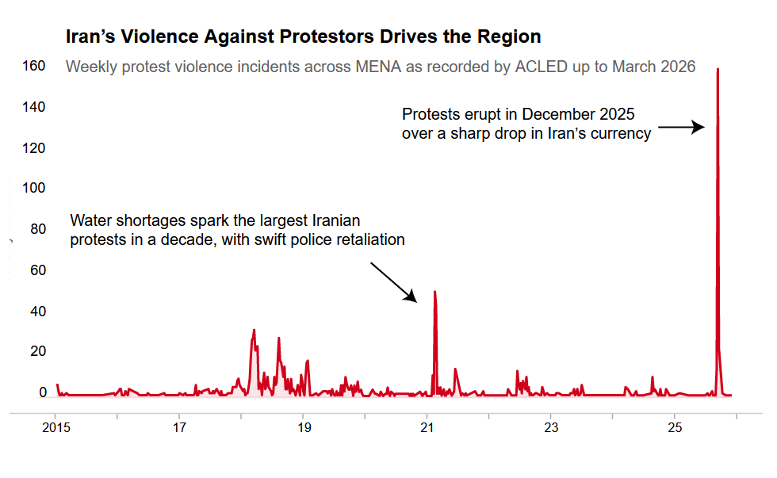
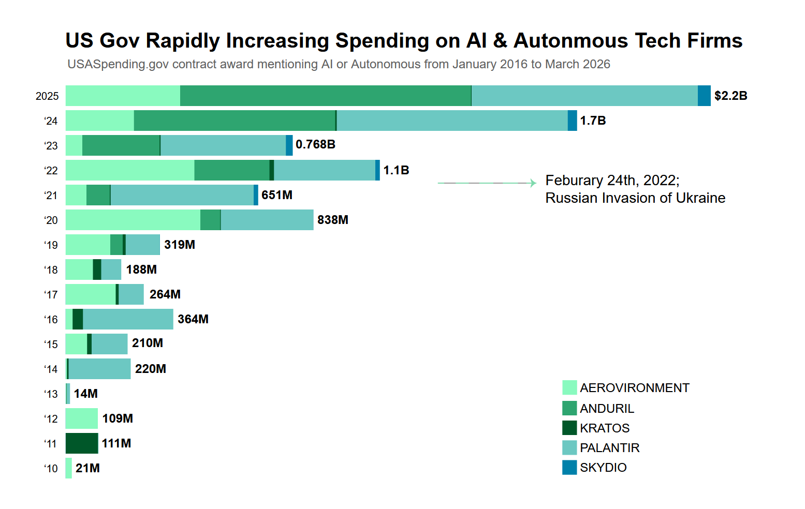
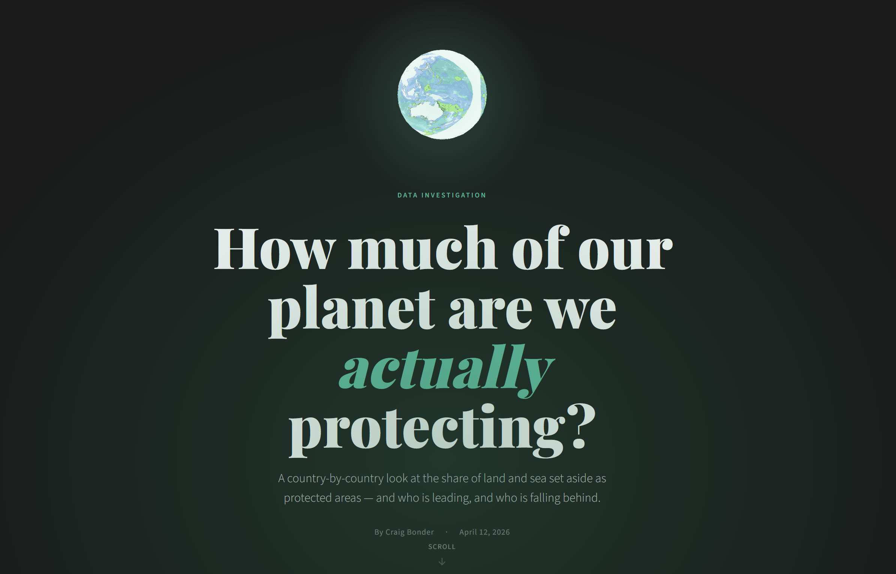

I'm a data journalist with aspirations bigger than my abilities. I like making maps and working on intelligence.
Second column content goes here.
My work!
Lobby Finder
A Python & CLI tool to quickly clean and visualize Senate LDA/FEC committee data for lobbying research. Enter company names, and get back clean data & 10+ readymade graphs.

How Bad Was Iran's Violent Crackdown on Protesters?
A decade of ACLED data on excessive force reveals the full scale of the regime's assault — and why this time was different.

A Decade of Spending on AI Weapons
Visualizing the massive increase in government spending on autonomous surveillance and weapons systems.

How much of our planet are we actually protecting?
A country-by-country look at the share of land and sea set aside as protected areas.

Second column content goes here.